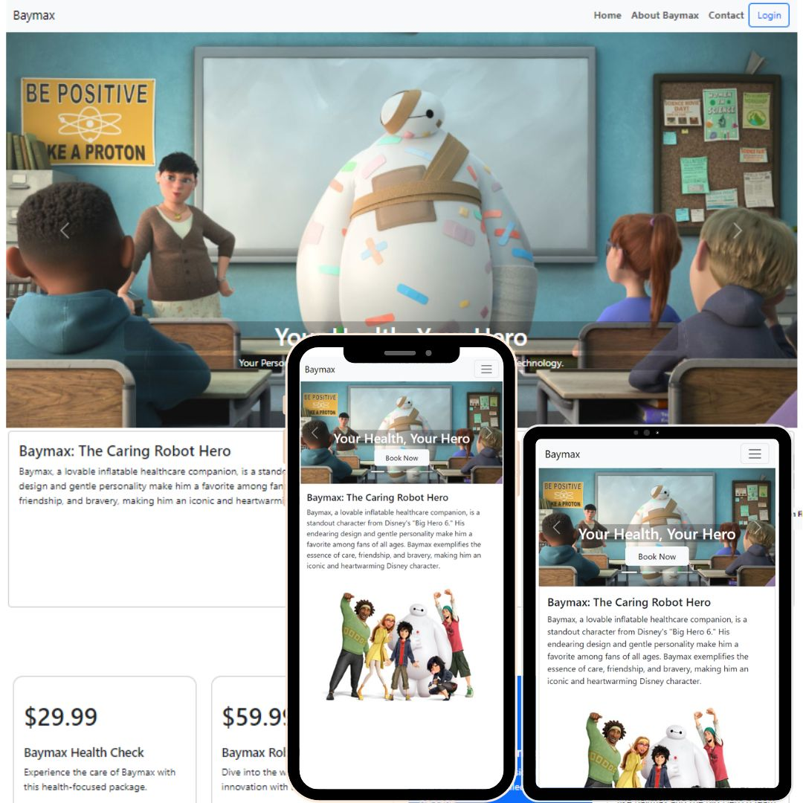
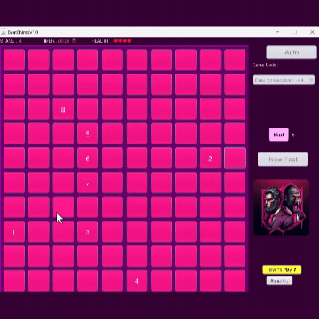
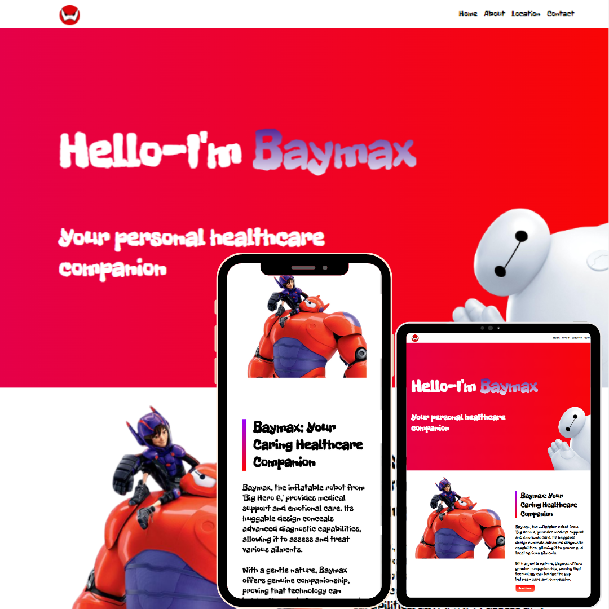
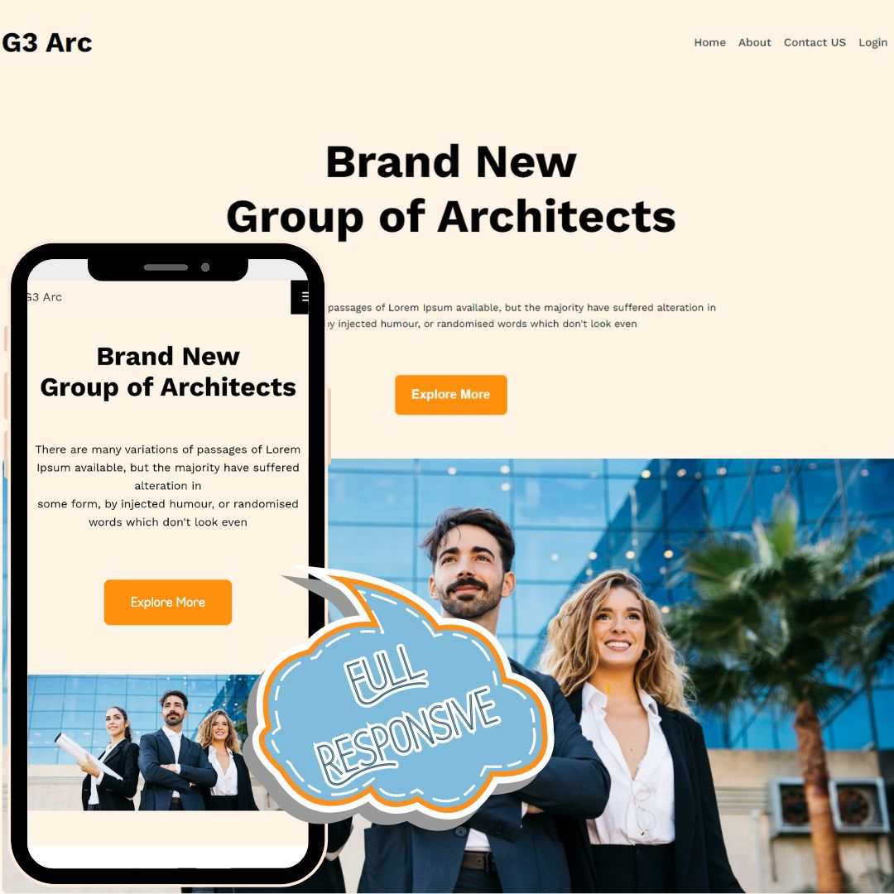

Browse My Recent
A showcase of my research and development projects in blockchain technology, UAV systems, smart contracts, and web development.
A blockchain-based framework for credible spectrum trading among UAVs with on-chain enforcement and transparent transactions.
Low-altitude UAV spectrum trading lacks trust, traceability, and verifiable rule enforcement.
Designed smart contracts for auction logic, settlement, and audit trails tied to UAV communication workflows.
Implemented and validated smart-contract logic, helped define protocol rules, and documented results for publication.

A modern responsive web experience focused on clean UX, smooth interaction, and maintainable front-end structure.
Build a portfolio-grade web experience that feels modern on desktop and mobile without sacrificing simplicity.
Built semantic multi-section UI with responsive breakpoints, animation layers, and optimized static assets.
Owned full lifecycle: layout architecture, component styling, interactions, and deployment setup.

A Java Swing memory game focused on measurable cognitive challenge progression and user performance feedback.
Deliver a desktop game that is simple to learn but progressively difficult and trackable.
Implemented event-driven game loops, progressive rounds, and score tracking in a modular Java Swing architecture.
Designed gameplay logic, implemented GUI states, and prepared release assets for distribution.

A foundational web project that established the design system and interaction patterns later expanded in Baymax 2.3.
Create an early version of a professional website with clear structure and maintainable styling.
Used modular HTML sections, reusable classes, and JavaScript DOM interactions for cleaner iteration.
Built the initial front-end architecture and interaction patterns that informed later versions.

A design-first architecture website emphasizing visual hierarchy, presentation quality, and polished user flow.
Present architecture content in a clean, brand-forward way with strong readability and structure.
Used grid-based composition, contrast-led typography, and spacing rules to improve page scanning.
Handled layout system, styling architecture, and final deployment of the project showcase.